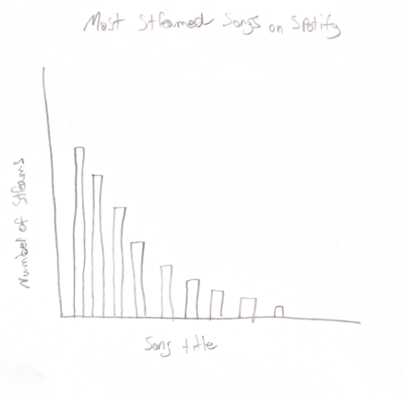
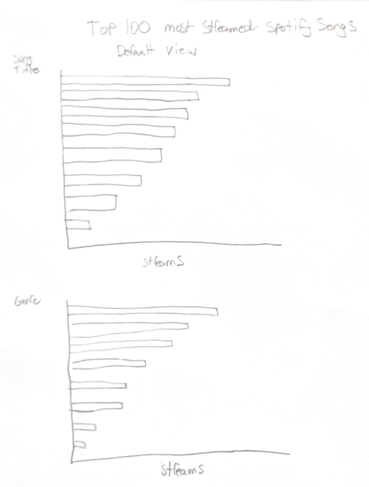
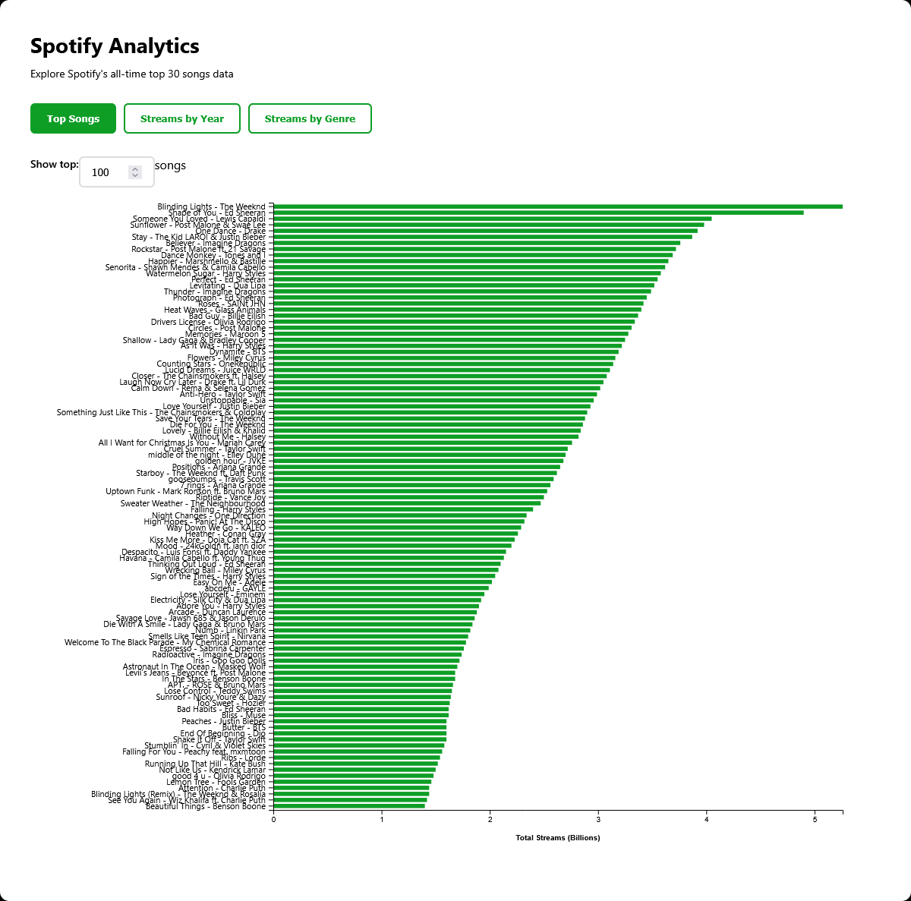

Based off this finding, I switched to a horizontal bar chart, where the titles are displayed on the Y axis, and written horizontally. As shown in the second rough sketch below.
I decided to make multiple graphs to show different aspects of the data, because I was unable to answer multiple questions by only organizing the data in one way. This is how I ended up with a a graph showing the top songs based on streams, a graph showing which years had the most overall streams, and a graph showing top genres based on streams. One of the first drafts that I made of the visualization allowed the user to select up to 100 songs to compare, but I found that the graph become cluttered and difficult to read when more than 30 songs were included in the data.
This is how I chose to limit the data to only 30 songs. The user is still able to adjust the number of songs shown, if they want to specifically compare the top 10 vs top 20, etc. However, to maintain the integrity of the graph's design, they are limited to the top 30. In my original rough planning of the chart, I made the bars a solid blue, just to visualize how I wanted to organize the data. Later on in my design process, I decided to make the bars green and follow the color scheme of Spotify's branding for cohesion. I kept the background a solid black to help make the data pop, and to continue with following Spotify's branding. To make access easier for the user, I changed the color of the bars to a lighter green when the user hovers over them, so that they can easily identify which bar they are looking at. They can also see the exact numerical values when they hover over the bars, so they can more easily compare the data. By utilizing the graphs, I was able to answer all three of my intial questions. I found that the song with the most streams was 'Blinding Lights' by The Weeknd. I also found that 2019 was the year with the most overall streams, with a total of 26.1 billion. Finally, I was able to determine that the most popular genre by streams was pop music.